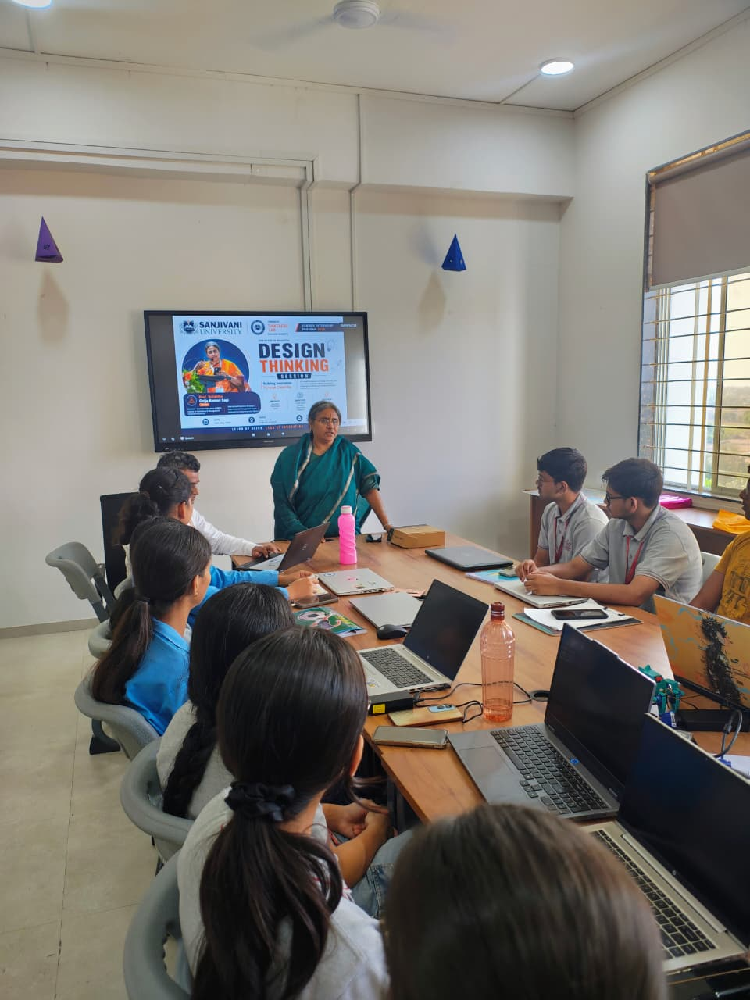
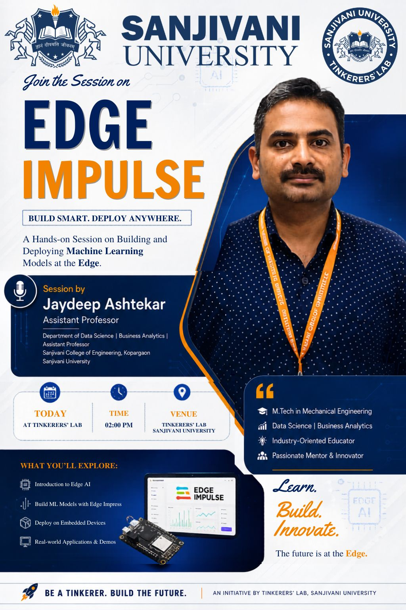
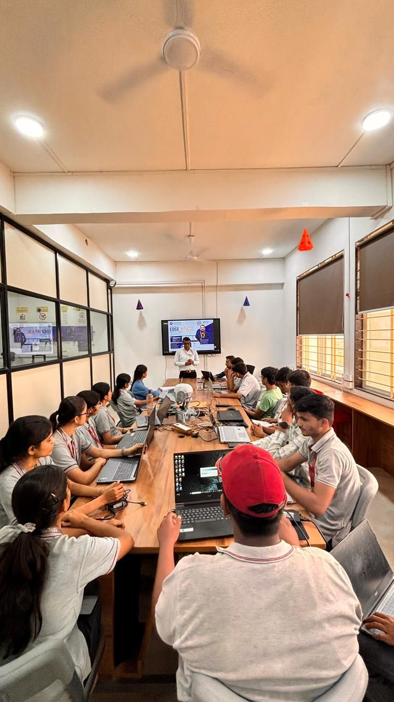
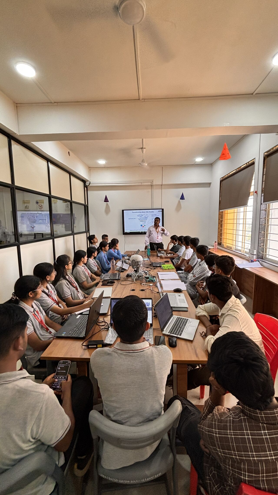
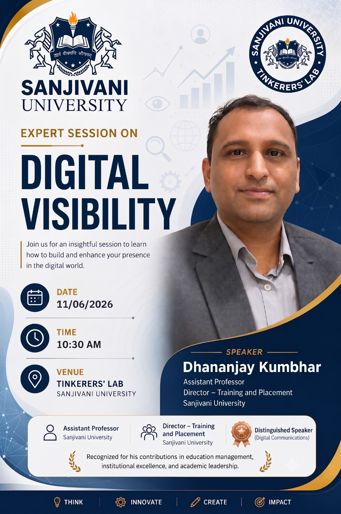

Sessions
Design Thinking Session
Building Innovation Through Creativity
Date: 26th May 2026 | Venue: Tinkerers' Lab, Sanjivani University
Speaker: Prof. Srilalitha Girija Kumari Sagi (Director – Executive Education & MDPs)
An insightful and highly interactive session on Design Thinking and Innovation, designed to guide students in approaching complex challenges creatively. The workshop focused on bridging the gap between abstract concepts and real-world execution, empowering students to develop impactful, human-centered solutions for the future.
Under the expert guidance of Prof. Srilalitha Girija Kumari Sagi, an International Business Strategist and Innovation Mentor, participants were introduced to cross-cultural management techniques and entrepreneurial thinking. Working collaboratively in teams around the Tinkerers' Lab, students engaged in hands-on brainstorming exercises, utilized their laptops for rapid research, and discussed viable methods to prototype their ideas into tangible projects.
Core Principles of Design Thinking
Design Thinking is a human-centered approach to problem-solving that focuses on understanding the needs of the user. During this session, participants explored the following key phases:
- Innovate: Generate Meaningful Ideas. This phase encourages lateral thinking and brainstorming without boundaries. Students learned how to break free from conventional cognitive constraints by employing techniques such as mind mapping, SCAMPER, and rapid ideation. By exploring diverse and often conflicting concepts, teams were able to synthesize unique, out-of-the-box solutions tailored to complex societal challenges.
- Empathize: Understand People, Solve Real Problems. Empathy is the absolute foundation of successful design thinking. It involves actively putting yourself in the users' shoes through immersive observation, detailed user interviews, and journey mapping. By deeply understanding the authentic experiences, emotional drivers, and specific pain points of their target audience, students ensured that their ensuing solutions were genuinely human-centric rather than technology-driven assumptions.
- Implement: Create Impact, Build a Better Future. Moving successfully from an abstract concept to a tangible reality requires rigorous validation. This crucial step focuses on building low-fidelity functional prototypes, testing them iteratively with actual end-users, and refining the designs based on continuous feedback. The ultimate goal is delivering sustainable, economically viable, and highly impactful results to the real world.
"Learn by Doing. Lead by Innovating."


EDGE IMPULSE
Build Smart. Deploy Anywhere.
Time: 02:00 PM | Venue: Tinkerers' Lab, Sanjivani University
Speaker: Jaydeep Ashtekar (Assistant Professor, Department of Data Science | Business Analytics)
A comprehensive, hands-on masterclass dedicated to the fascinating world of Edge AI. This intensive session introduced students to the lifecycle of building, training, and deploying efficient Machine Learning (ML) models directly onto constrained embedded devices at the edge of the network.
Led by Jaydeep Ashtekar—an industry-oriented educator, passionate mentor, and innovator with profound expertise spanning Mechanical Engineering, Data Science, and Business Analytics—the workshop offered a deep dive into practical, real-world deployment of artificial intelligence. By minimizing reliance on cloud computing, Edge AI empowers devices to process data locally, resulting in faster decision-making, enhanced privacy, and lower power consumption.
What We Explored
Students actively engaged with hardware kits and advanced development platforms to accomplish the following:
- Introduction to Edge AI: Exploring the fundamental paradigm shift from traditional, latency-prone cloud-dependent architectures to decentralized edge computing models. Participants learned how processing data locally directly on the sensor node significantly reduces bandwidth consumption, enhances user privacy, and guarantees real-time deterministic responses in mission-critical applications.
- Build ML Models with Edge Impulse: Utilizing the industry-leading Edge Impulse platform, students engaged in the full MLOps pipeline. They learned how to securely ingest raw time-series sensor data, engineer highly relevant signal processing features using DSP blocks, and train highly compact, quantized neural networks (such as CNNs and RNNs) capable of recognizing complex acoustic, vibrational, and visual patterns.
- Deploy on Embedded Devices: Bridging the gap between software and hardware by learning the intricacies of compiling trained ML models into highly optimized, memory-efficient C++ libraries. Students practiced deploying these inferencing engines directly onto resource-constrained microcontrollers, DSPs, and single-board computers like Arduino and Raspberry Pi without requiring an active internet connection.
- Real-world Applications & Demos: Demonstrating exactly how Edge AI solves critical modern industry challenges. The session showcased live demonstrations of predictive maintenance in smart manufacturing (detecting motor anomalies), continuous health monitoring in advanced wearables (ECG and fall detection), and intelligent environmental analysis in automated smart agriculture systems.
"Learn. Build. Innovate. The future is at the Edge."


INTELLECTUAL PROPERTY RIGHTS
Understanding the value of ideas, protecting innovation, and empowering creators.
Date: 10th June 2026 | Time: 12:30 PM Onwards | Venue: Tinkerers' Lab, Sanjivani University
Speaker: Dr. M Sujith (Innovation Leader | IPR Expert)
An essential and eye-opening expert session designed to demystify the complex world of Intellectual Property Rights (IPR). The seminar illuminated the critical importance of legally protecting original inventions, ensuring that creative efforts and technological breakthroughs are shielded from unauthorized use.
Conducted by Dr. M Sujith, a renowned Innovation Leader and IPR Expert, the session provided students and emerging innovators with actionable strategies to navigate the patenting process. Through detailed discussions and real-world case studies, participants discovered how to transform their laboratory prototypes into legally recognized, commercial assets.
Key Focus Areas
The expert presentation systematically covered the foundational pillars of intellectual property, empowering attendees to:
- Learn about IPR Fundamentals: Gaining a crystal-clear, comprehensive understanding of the core categories of intellectual property in the modern innovation landscape. The speaker meticulously differentiated between utility and design patents, the brand-protection power of trademarks, the creative safeguarding of copyrights, and the immense strategic value of maintaining confidential corporate trade secrets.
- Understand Your Rights: Navigating the complex local and international legal frameworks that successfully grant inventors exclusive, enforceable rights over their unique creations. Students learned how to interpret IP statutes, recognized the strict duration limits and geographical scope of these protections, and explored the legal remedies available against infringement and unauthorized commercial exploitation.
- Protect Your Innovations: Providing highly actionable, step-by-step guidance on how to systematically identify truly patentable engineering ideas from everyday lab work. This included extensive training on how to conduct exhaustive 'prior art' searches using global patent databases, draft highly specific patent claims, and navigate the bureaucratic intricacies of officially filing intellectual property applications with regulatory bodies.
- Empower Your Ideas: Demonstrating how IP is far more than just a defensive legal shield; it is a powerful commercial asset. Students discovered how leveraging secured, robust IP portfolios can dramatically increase corporate valuation, attract vital venture capital investment, establish defensible university spin-off startup enterprises, and actively foster a culture of ethical and profitable technological advancement.
"Ideas are powerful. Protect them. Own them. Grow with them. Be an Innovator. Be IP Smart."


DIGITAL VISIBILITY
Build and enhance your presence in the digital world.
Date: 11th June 2026 | Time: 10:30 AM | Venue: Tinkerers' Lab, Sanjivani University
Speaker: Dhananjay Kumbhar (Assistant Professor, Director – Training and Placement)
An engaging and forward-looking expert session focused entirely on Digital Visibility and modern communication strategies. In an increasingly connected world, building a robust digital footprint is essential for students and professionals looking to showcase their technical portfolios and stand out to global recruiters.
The session was delivered by Dhananjay Kumbhar, a Distinguished Speaker in Digital Communications who is widely recognized for his contributions to education management, institutional excellence, and academic leadership. Drawing from his extensive experience as the Director of Training and Placement at Sanjivani University, he provided students with strategic blueprints on how to curate a professional online persona, network effectively, and convert digital presence into tangible career opportunities.
Key Takeaways
The presentation emphasized core strategies that empower individuals to leverage digital platforms effectively:
- Think Strategically: Actively identifying and cultivating your unique professional personal brand in a crowded digital marketplace. The session covered how to perform a self-audit of your current digital footprint, clearly define your target industry audience, and strategically understand which specific digital platforms (e.g., LinkedIn, GitHub, Medium) best align with your long-term career trajectory and technical expertise.
- Innovate Your Profile: Utilizing modern, cutting-edge tools to drastically elevate your online presence. Students were taught how to move beyond static, traditional CVs to create highly compelling, dynamically hosted digital portfolios and interactive resumes. The speaker also highlighted the importance of consistently authoring and publishing engaging professional content, such as technical blogs and project case studies, to showcase thought leadership.
- Create Meaningful Connections: Mastering the nuanced art of digital networking. Participants learned actionable best practices for initiating authentic conversations with established industry leaders, actively participating in niche professional communities and open-source projects, and constructively engaging in highly relevant, high-visibility technical discussions online without appearing purely transactional.
- Generate Real Impact: Focusing on actionable outcomes by effectively measuring digital engagement analytics. The session concluded by teaching students how to seamlessly translate increased online visibility and curated networking efforts into tangible real-world opportunities—such as securing competitive internship offers, sourcing collaborative open-source projects, attracting freelance clients, and accelerating long-term executive career growth.
"THINK | INNOVATE | CREATE | IMPACT"
